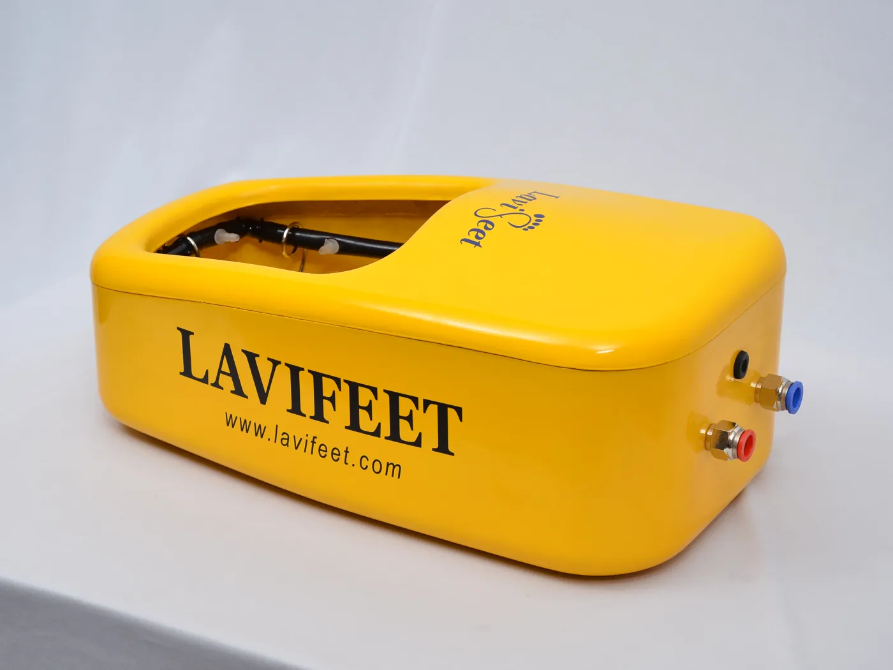
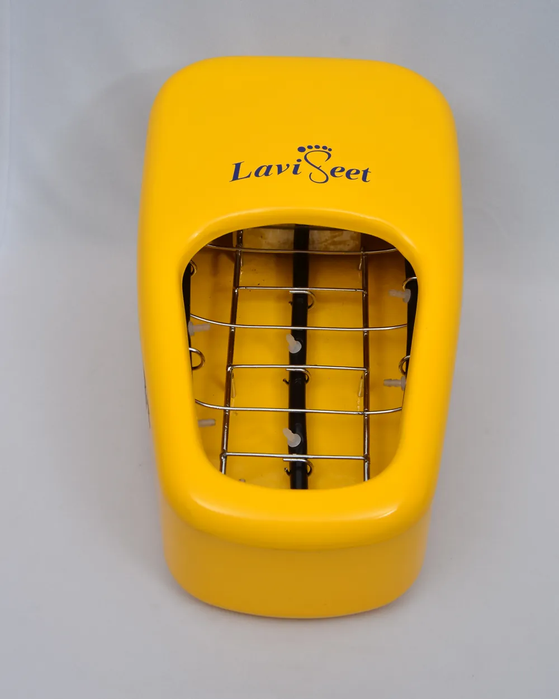

Portable
Compact enough to place under a washbasin or carry to wherever it's needed.
LaviFeetCare for health, starting from the feet
Place your foot in the shoe-shaped bowl. LaviFeet senses it, sprays water from every side, scrubs, drains itself and is ready for the next foot, all without touching a tap.
Hygiene, automated · engineered by Switchers
LaviFeet is a shoe-shaped foot washing system. Place a foot on the wash grill and an internal sensor triggers the spray. Nozzles wash the foot from every side, brushes in the grill lift the dirt, and the used water drains away automatically.
It fits under a regular washbasin at home, and works just as well at the entrance to a hospital, temple, hotel or beach. After a day on the sand, wash it all off cleanly in seconds.
Eight seconds from the front door: a foot goes in, the spray does the work, and the shell lifts open for easy cleaning.
Here's what happens inside the bowl. Press play, or pick a step to see it on the cross-section.
The inlet and drain connect to the washbasin pipelines. Evenly spaced nozzles cover the foot from every direction, and the spray stays inside the enclosure, so nothing splashes around and very little water is used.
Beauty treatments, pedicures and spa washes use a lot of water. LaviFeet was designed to save it.
Sensing, low water use and a modular design make it practical to install, use and maintain.
Compact enough to place under a washbasin or carry to wherever it's needed.
Insert a foot and the cycle runs on its own. No taps to turn.
An internal sensor detects the foot and triggers the spray.
Designed to reduce the energy each wash needs. Runs on 110 V AC mains.
A water sensor switches the drain pump on and off, so it runs only when there's water to clear.
About one-tenth of the water of a normal foot wash.
Clean, sparkling feet in seconds, with no waiting at the parlour.
Two main modules, the bowl and the controller box.
Simple connections make it easy to look after and quick to put right.
Suits men's, women's and accessible restrooms.
Put it under a washbasin at home, or anywhere people need clean feet: entrances, wet areas and public spaces.
Hospitals, ICUs, operation and delivery theatres, acupuncture clinics, and visitors meeting newborn babies.
Temple and mosque entrances, where clean feet come first.
Restaurants, hotels, spas, shopping centres and gyms.
Parks, public squares, bus stands, airports, and resting places on hot days.
Construction and road works, bridge builders, cobblers, and office entrances on rainy days.
Under the washbasin, at the front door, and after playing with your pets.
A smooth, rounded shell in sunshine yellow or soft aqua, with hot and cold inlets on the side and the wash grill inside.


The system splits into a bowl and a controller box. Sensing, embedded control, valves and the pump work together, so the user only has to step in.
Foot sensor, flow-rate and water-temperature buttons, and spray nozzles on every side.
Separates the top and bottom decks. Brushes on the grill scrub the foot clean.
Takes hot and cold water from the basin connection, mixes it automatically and runs from 110 V mains.
A motorised pump empties the bottom deck into the basin drain. It's optional wherever gravity drainage works.
Looking at LaviFeet for a hospital, hotel, place of worship, beach or home? Or do you have your own idea for a smart hygiene product? Talk to the Switchers team. We take products from sensing and embedded control through to production.